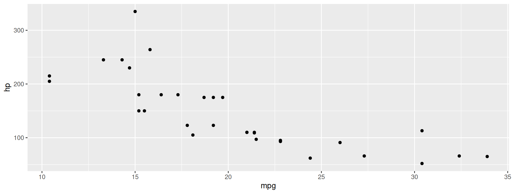
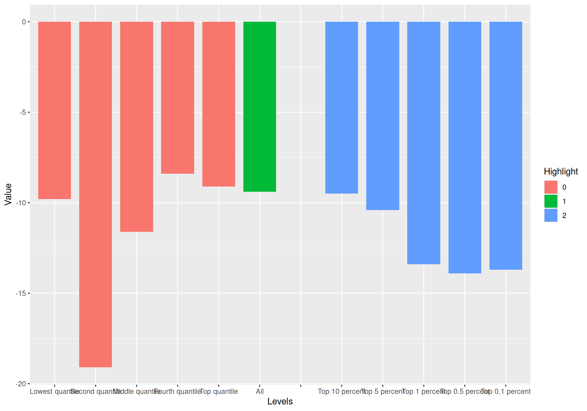
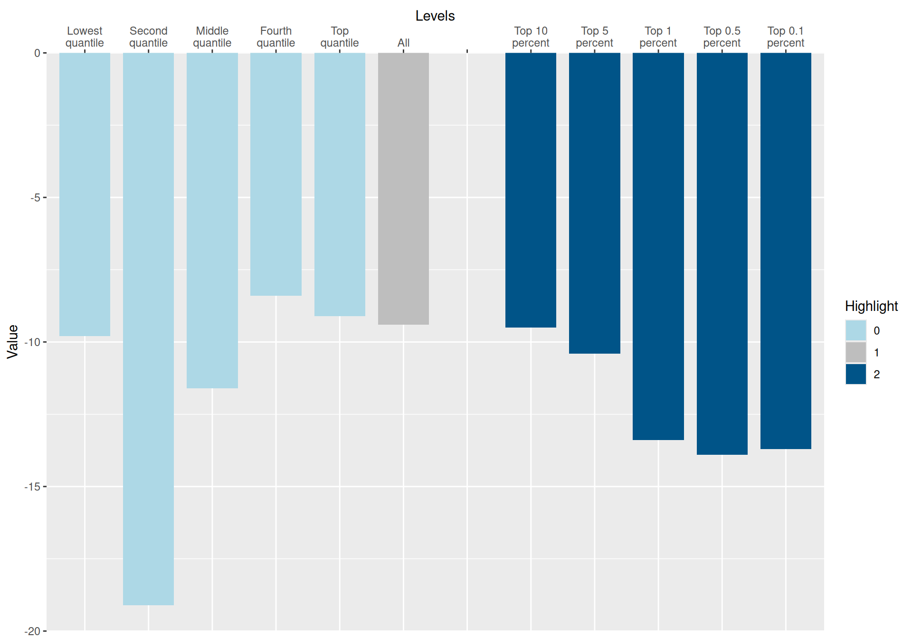
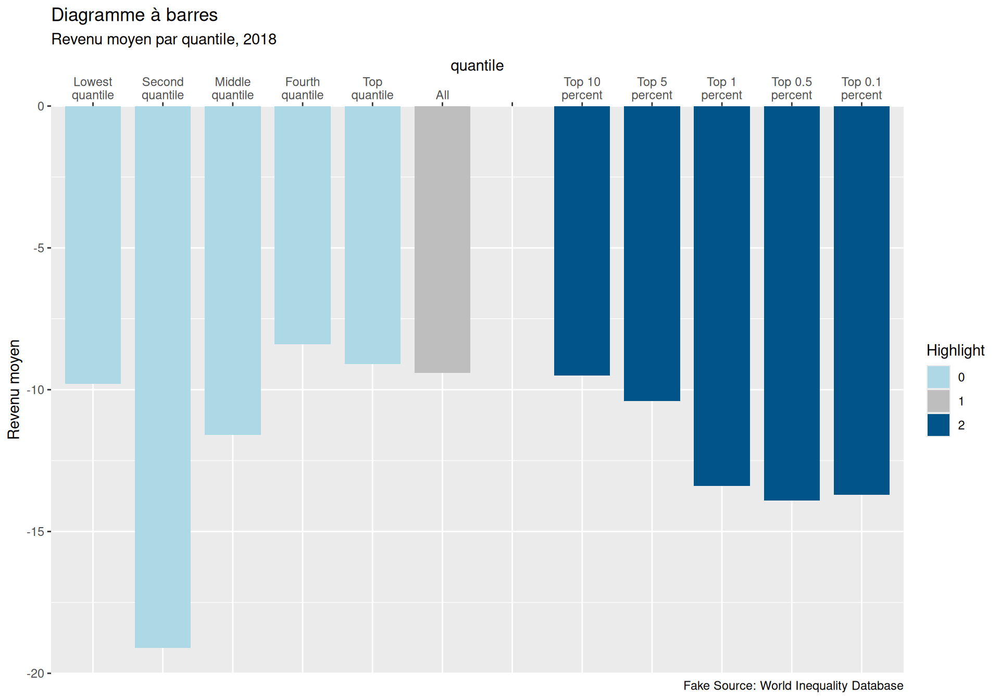
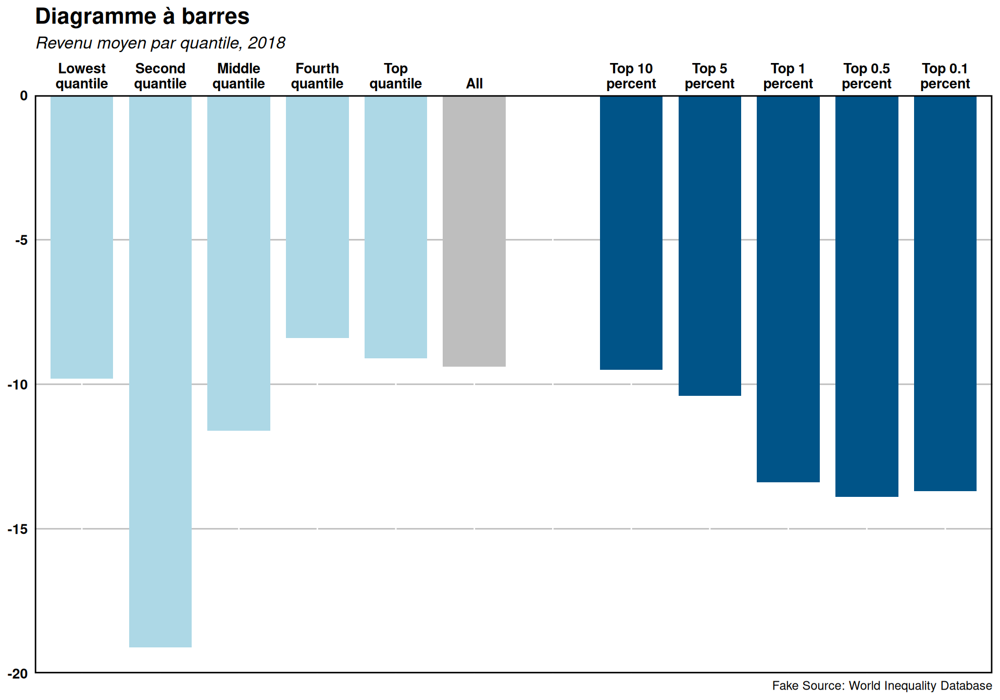

library(ggplot2)
# Créer un graphique de dispersion simple
ggplot(data = mtcars, aes(x = mpg, y = hp)) +
geom_point()
Guide pratique pour créer des visualisations attrayantes en R
Institut national de la recherche scientifique
Université du Québec à Chicoutimi
ggplot2 ?ggplot2 est une librairie de visualisation de données en R.ggplot2 permet de créer des visualisations esthétiques et hautement personnalisables.Pour créer un graphique avec ggplot2, nous avons besoin de trois choses :
Les données à visualiser;
Esthétiques (aes) : mappings entre variables et propriétés visuelles (e.g., x, y, couleur, forme, etc.)
Geom : le type de graphique à créer (e.g., points, lignes, barres, etc.)
| mpg | cyl | disp | hp | drat | wt | qsec | vs | am | gear | carb | |
|---|---|---|---|---|---|---|---|---|---|---|---|
| Mazda RX4 | 21.0 | 6 | 160.0 | 110 | 3.90 | 2.620 | 16.46 | 0 | 1 | 4 | 4 |
| Mazda RX4 Wag | 21.0 | 6 | 160.0 | 110 | 3.90 | 2.875 | 17.02 | 0 | 1 | 4 | 4 |
| Datsun 710 | 22.8 | 4 | 108.0 | 93 | 3.85 | 2.320 | 18.61 | 1 | 1 | 4 | 1 |
| Hornet 4 Drive | 21.4 | 6 | 258.0 | 110 | 3.08 | 3.215 | 19.44 | 1 | 0 | 3 | 1 |
| Hornet Sportabout | 18.7 | 8 | 360.0 | 175 | 3.15 | 3.440 | 17.02 | 0 | 0 | 3 | 2 |
| Valiant | 18.1 | 6 | 225.0 | 105 | 2.76 | 3.460 | 20.22 | 1 | 0 | 3 | 1 |
| Duster 360 | 14.3 | 8 | 360.0 | 245 | 3.21 | 3.570 | 15.84 | 0 | 0 | 3 | 4 |
| Merc 240D | 24.4 | 4 | 146.7 | 62 | 3.69 | 3.190 | 20.00 | 1 | 0 | 4 | 2 |
| Merc 230 | 22.8 | 4 | 140.8 | 95 | 3.92 | 3.150 | 22.90 | 1 | 0 | 4 | 2 |
| Merc 280 | 19.2 | 6 | 167.6 | 123 | 3.92 | 3.440 | 18.30 | 1 | 0 | 4 | 4 |
| Merc 280C | 17.8 | 6 | 167.6 | 123 | 3.92 | 3.440 | 18.90 | 1 | 0 | 4 | 4 |
| Merc 450SE | 16.4 | 8 | 275.8 | 180 | 3.07 | 4.070 | 17.40 | 0 | 0 | 3 | 3 |
| Merc 450SL | 17.3 | 8 | 275.8 | 180 | 3.07 | 3.730 | 17.60 | 0 | 0 | 3 | 3 |
| Merc 450SLC | 15.2 | 8 | 275.8 | 180 | 3.07 | 3.780 | 18.00 | 0 | 0 | 3 | 3 |
| Cadillac Fleetwood | 10.4 | 8 | 472.0 | 205 | 2.93 | 5.250 | 17.98 | 0 | 0 | 3 | 4 |
| Lincoln Continental | 10.4 | 8 | 460.0 | 215 | 3.00 | 5.424 | 17.82 | 0 | 0 | 3 | 4 |
| Chrysler Imperial | 14.7 | 8 | 440.0 | 230 | 3.23 | 5.345 | 17.42 | 0 | 0 | 3 | 4 |
| Fiat 128 | 32.4 | 4 | 78.7 | 66 | 4.08 | 2.200 | 19.47 | 1 | 1 | 4 | 1 |
| Honda Civic | 30.4 | 4 | 75.7 | 52 | 4.93 | 1.615 | 18.52 | 1 | 1 | 4 | 2 |
| Toyota Corolla | 33.9 | 4 | 71.1 | 65 | 4.22 | 1.835 | 19.90 | 1 | 1 | 4 | 1 |
| Toyota Corona | 21.5 | 4 | 120.1 | 97 | 3.70 | 2.465 | 20.01 | 1 | 0 | 3 | 1 |
| Dodge Challenger | 15.5 | 8 | 318.0 | 150 | 2.76 | 3.520 | 16.87 | 0 | 0 | 3 | 2 |
| AMC Javelin | 15.2 | 8 | 304.0 | 150 | 3.15 | 3.435 | 17.30 | 0 | 0 | 3 | 2 |
| Camaro Z28 | 13.3 | 8 | 350.0 | 245 | 3.73 | 3.840 | 15.41 | 0 | 0 | 3 | 4 |
| Pontiac Firebird | 19.2 | 8 | 400.0 | 175 | 3.08 | 3.845 | 17.05 | 0 | 0 | 3 | 2 |
| Fiat X1-9 | 27.3 | 4 | 79.0 | 66 | 4.08 | 1.935 | 18.90 | 1 | 1 | 4 | 1 |
| Porsche 914-2 | 26.0 | 4 | 120.3 | 91 | 4.43 | 2.140 | 16.70 | 0 | 1 | 5 | 2 |
| Lotus Europa | 30.4 | 4 | 95.1 | 113 | 3.77 | 1.513 | 16.90 | 1 | 1 | 5 | 2 |
| Ford Pantera L | 15.8 | 8 | 351.0 | 264 | 4.22 | 3.170 | 14.50 | 0 | 1 | 5 | 4 |
| Ferrari Dino | 19.7 | 6 | 145.0 | 175 | 3.62 | 2.770 | 15.50 | 0 | 1 | 5 | 6 |
| Maserati Bora | 15.0 | 8 | 301.0 | 335 | 3.54 | 3.570 | 14.60 | 0 | 1 | 5 | 8 |
| Volvo 142E | 21.4 | 4 | 121.0 | 109 | 4.11 | 2.780 | 18.60 | 1 | 1 | 4 | 2 |
En savoir plus : ggplot
Les couches graphiques (geoms) déterminent le type de graphique que nous voulons créer (e.g., points, lignes, barres).
En savoir plus : ggplot
Dans ggplot2, la personnalisation des graphiques est facilitée par un large éventail d’options et de fonctions qui permettent de contrôler presque tous les aspects de l’apparence des graphiques. En explorant et en expérimentant ces options, les utilisateurs peuvent créer des visualisations de données uniques et adaptées à leurs besoins spécifiques, tout en respectant les meilleures pratiques en matière de conception graphique et de communication des données.
Dans la suite, nous allons utiliser le jeu de données exemple_df pour illustrer les différentes options de personnalisation des graphiques ggplot2.
exemple_df <- data.frame(
Levels = c(
"Lowest quantile", "Second quantile", "Middle quantile",
"Fourth quantile", "Top quantile", "All", "",
"Top 10 percent", "Top 5 percent", "Top 1 percent",
"Top 0.5 percent", "Top 0.1 percent"),
Value = c(-9.8, -19.1, -11.6, -8.4, -9.1, -9.4, 0, -9.5, -10.4, -13.4, -13.9, -13.7)) |>
mutate(
Highlight = c(rep("0", 5), "1", rep("2", 6)),
Levels = factor(Levels, levels = Levels)
)| Levels | Value | Highlight |
|---|---|---|
| Lowest quantile | -9.8 | 0 |
| Second quantile | -19.1 | 0 |
| Middle quantile | -11.6 | 0 |
| Fourth quantile | -8.4 | 0 |
| Top quantile | -9.1 | 0 |
| All | -9.4 | 1 |
| 0.0 | 2 | |
| Top 10 percent | -9.5 | 2 |
| Top 5 percent | -10.4 | 2 |
| Top 1 percent | -13.4 | 2 |
| Top 0.5 percent | -13.9 | 2 |
| Top 0.1 percent | -13.7 | 2 |
Les thèmes ggplot2 permettent de modifier l’apparence générale du graphique. En plus de theme_minimal(), il existe d’autres thèmes intégrés tels que theme_classic(), theme_dark(), theme_bw(), theme_gray(), et theme_light(). Vous pouvez également créer vos propres thèmes en utilisant la fonction theme() et en modifiant les éléments individuels, tels que les lignes, les arrière-plans, les polices et les couleurs.

Les échelles contrôlent la manière dont les données sont mappées aux propriétés visuelles. Vous pouvez personnaliser les échelles des axes x et y en utilisant scale_x_continuous() et scale_y_continuous() pour les variables continues, ou scale_x_discrete() et scale_y_discrete() pour les variables discrètes. Vous pouvez également modifier les étiquettes, les limites et les ruptures des axes, ainsi que les couleurs et les dégradés.
library(stringr)
ggplot(
data = exemple_df,
aes(x = Levels, y = Value, fill = Highlight)
) +
geom_col(
position = "dodge",
width = 0.8
) +
# Echelles pour les axes x et y
scale_y_continuous(
expand = c(0, 0),
limits = c(-20, 0),
n.breaks = 6
) +
scale_x_discrete(
position = "top",
labels = function(x) {
str_wrap(x, width = 10)
}
) +
# Couleurs de remplissage
scale_fill_manual(
values = c(
"0" = "lightblue",
"1" = "gray",
"2" = "#005488"
)
)
library(stringr)
ggplot(
data = exemple_df,
aes(x = Levels, y = Value, fill = Highlight)
) +
geom_col(
position = "dodge",
width = 0.8
) +
# Echelles pour les axes x et y
scale_y_continuous(
expand = c(0, 0),
limits = c(-20, 0),
n.breaks = 6
) +
scale_x_discrete(
position = "top",
labels = function(x) {
str_wrap(x, width = 10)
}
) +
# Couleurs de remplissage
scale_fill_manual(
values = c(
"0" = "lightblue",
"1" = "gray",
"2" = "#005488"
)
) +
labs(
title = "Diagramme à barres",
subtitle = "Revenu moyen par quantile, 2018",
caption = "Fake Source: World Inequality Database",
x = "quantile",
y = "Revenu moyen"
)
library(stringr)
ggplot(
data = exemple_df,
aes(x = Levels, y = Value, fill = Highlight)
) +
geom_col(
position = "dodge",
width = 0.8
) +
# Echelles pour les axes x et y
scale_y_continuous(
expand = c(0, 0),
limits = c(-20, 0),
n.breaks = 6
) +
scale_x_discrete(
position = "top",
labels = function(x) {
str_wrap(x, width = 10)
}
) +
# Couleurs de remplissage
scale_fill_manual(
values = c(
"0" = "lightblue",
"1" = "gray",
"2" = "#005488"
)
) +
labs(
title = "Diagramme à barres",
subtitle = "Revenu moyen par quantile, 2018",
caption = "Fake Source: World Inequality Database",
x = "quantile",
y = "Revenu moyen"
) +
theme(
# Supprimer la légende
legend.position = "none",
# Supprimer les titres des axes
axis.title = element_blank(),
# Supprimer les ticks des axes
axis.ticks = element_blank(),
# Modifier la police des étiquettes
axis.text = element_text(
size = 10,
face = "bold",
color = "black"
),
# Modifier le titre
plot.title = element_text(
size = 16,
face = "bold"
),
# Modifier le sous-titre
plot.subtitle = element_text(
size = 12,
face = "italic"
),
# Supprimer le fond
panel.background = element_blank(),
# Ajouter une bordure
panel.border = element_rect(
color = "black",
fill = NA,
size = 1
),
# Ajouter la grille horizontale
panel.grid.major.y = element_line(
color = "gray",
size = 0.5
)
)
Dans ce cours d’introduction à ggplot2, nous avons appris les bases de la création de graphiques à l’aide de ce puissant package R. Nous avons exploré divers types de graphiques (geoms), ainsi que des options de personnalisation pour adapter l’apparence des graphiques à nos besoins spécifiques. La maîtrise de ggplot2 permet de créer des visualisations de données informatives et attrayantes, facilitant ainsi l’analyse et la communication des résultats.
Pour approfondir vos connaissances en ggplot2, consultez les ressources en ligne suivantes :
Le comité étudiant du CISD